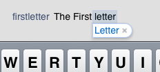
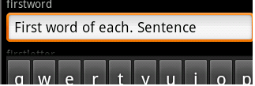

Assists the end-user to enter information in character or varchar fields by reducing the number of taps to enable/disable caps. Values
Scope Generators: Android, Apple Description
Applications have fields whose capitalization behavior is usually known to developers. For example, a name has the first letter of each word in uppercase: John Smith. So, this property allows setting an Auto capitalization behavior to favor Samples
  |
| Backlinks | |
| Auto correction property | Toc:Native Mobile Applications Development |